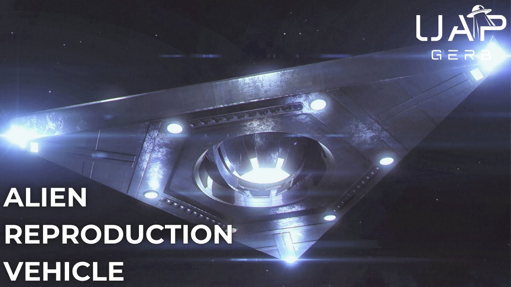

Alien Reproduction Vehicle - TR-3B and the Flying Triangles

Published: 2024-12-01 · Duration: 1:17:06 · Channel: UAP Gerb
Description
A deep dive into the triangular UAP seen throughout the United States and the world for decades. With the Immaculate Constellation report, at least SOME equilateral and isosceles triangle craft have been identified as reproduction and Alien Reproduction Vehicles.
Numerous sightings and whistleblower testimony have lent evidence to the thesis DOD and private contractors have operated reverse-engineered triangular craft out of key military bases since at least the 1980s. Key testimonies here include: Edgar Fouche and the TR-3b reverse-engineered triangle, US sightings from 1980-2000, and a strange illustration of a triangular craft called the XF-131 Super Sentinel.
Was Edgar Fouche's testimony of TR-3B and Area 51 programs true? How many prototype and operational triangle ARVs have been constructed? Why did the X-Files contract the work of an allegedly real triangle ARV out of Lockheed Martin's Helendale Plant?
00:00 Intro 03:27 Triangle ARV Introduction 09:28 Edgar Fouche 13:08 Edgar Fouche's disclosures 27:16 TR-3B 45:08 Edgar Fouche Controversy 50:42 Triangle ARV Sightings 55:59 XF-131 Super Sentinel 1:06:40 Conclusion
Immaculate Constellation Report: https://mace.house.gov/sites/evo-subsites/mace.house.gov/files/evo-media-document/Cannon%20212_20241113_154539.pdf
AARO 2024 Report: https://media.defense.gov/2024/Nov/14/2003583603/-1/-1/0/FY24-CONSOLIDATED-ANNUAL-REPORT-ON-UAP-508.PDF
Fouche NUFORC 1998 Presentation: https://www.youtube.com/watch?v=Cc1IrnEkH0g&t=3668s
Fouche Biography (& Controversy): Biography: https://alienscientist.com/fouche.html
Secret Space Programme (262 and 257): https://archive.org/details/SecretSpaceProgrammeAndrewJohnson/page/n258/mode/1up
TR-3B QnA: http://checktheevidencecom.ipage.com/checktheevidence.com/pdf/TR-3B%20questions%20and%20Answers.pdf
Fouche Foia Docs: http://checktheevidencecom.ipage.com/checktheevidence.com/pdf/Edgar%20Fouches%20Military%20Documents.pdf
Foia Approval: - https://web.archive.org/web/20160309084610/http:/www.david-hilton.net/fouche-docs/fouche-military-records/edgar-fouche-military-record-1.jpg - https://web.archive.org/web/20160308152442/http:/www.david-hilton.net/fouche-docs/fouche-military-records/edgar-fouche-military-record-2.jpg
Secret Government Tech TR-3B: https://www.bibliotecapleyades.net/ciencia/ciencia_extraterrestrialtech07.htm
Schratt Triangles: https://www.youtube.com/watch?v=Hyv44jPsLVY&t=3272s
Andrew Johnson’s interviews with Fouche: https://www.youtube.com/watch?v=aKcIO_Qmr9I&list=PLduAC5d8yaEa6i3jx0jf_DxCvxu8Ax6Z0&index=1
Fouche Controversy Response: https://www.theoutpostforum.com/tof/showthread.php?1693-Edgar-Fouche-Career-Documents-Thoughtson-T%20echnology-and-Military&p=33529&viewfull=%201
Colin Saunders: - https://www.youtube.com/watch?v=u6ohXHJKG1I&t=112s - https://www.coasttocoastam.com/photo/colin-saunders-ufo-illustrations/
1983 Croton Falls: https://www.ufo-search.com/timeline/search.html?q=Croton+Falls&sm=10&sd=28&sy=1983
T.R.E.A.T.: https://x.com/PaulSmi04395825/status/1848311179438932160
Aurora: - https://www.sandboxx.us/blog/was-americas-aurora-hypersonic-aircraft-real-we-get-to-the-bottom-of-it/ - https://www.latimes.com/archives/la-xpm-1985-02-09-fi-4198-story.html
Astra Bsocombe Down: https://archive.org/details/air-forces-monthly-special-stealth/mode/2up
TR-3A: https://www.sandboxx.us/news/airpower/exploring-the-claims-that-americas-tr-3a-ufo-fought-in-desert-storm/
FFRDC: https://ncses.nsf.gov/resource/master-gov-lists-ffrdc
Joseph Jones: https://futuretheater.com/assets/pdf/star-shield.pdf
Sekret Machines: https://www.amazon.com/Sekret-Machines-Book-Chasing-Shadows/dp/1943272298
Secret Government Tech TR-3B: https://www.bibliotecapleyades.net/ciencia/ciencia_extraterrestrialtech07.htm
DARC (Pg 82): https://documents2.theblackvault.com/documents/dtic/a154363.pdf
Stubblebine: https://en.wikipedia.org/wiki/Albert_Stubblebine
THIS VIDEO IS FOR EDUCATIONAL PURPOSE ONLY! FAIR USE PRINCIPLES UNDER SECTION 107 OF THE COPYRIGHT ACT.
ufo #uap #uapnukes #uapdisclosure #ufology #ufonews #ufosightings #uapsightings #ufofootage #uapfootage #hynek #condoncomittee #Jallenhynek #projectsign #projectgrudge #projectbluebook #bluebook #ufocongress #SOL #solfoundation #karlnell #Battelle #UFOreverseengineering #lockheed #skunkworks #lockheedmartin #rosscoulthart #fastwalker #blackvault #slowwalker #kingman #ufocrash #nickredfern #Grusch #Magenta #michaelherrera #USO #TimothyGallaudet #mystery #mysteries #unexplained #extraterrestrial #space #technology #greer #kecksburg #kecksburgUFO #nasa #edwards #usaf #elizondo #arv #McCandlish #immaculateconstellation #rosscoulthart #edgarfouche #tr3b #arv
Transcript
Show transcript
For decades, humans around the world have reported sightings of dark, triangular-shaped UFOs, often featuring three bright white lights at each corner and a dull red light or structural features on the middle surface. Unlike classic flying saucers, orbs, egg-shaped craft, tic-tacs, and strange organic shapes like the controversial jellyfish UAP, triangles have historically not been associated with non-human intelligence, but instead, with deep-sixed, black-budget human reverse engineering efforts. This is somewhat due to triangular craft lacking many of the hallmarks of what some would consider NHI craft. No visible means of propulsion, a lack of harsh angles and surface features, missing rivets, bolts, and seams, as well as many triangular sightings occurring in concentrated periods over populated regions and military bases. Triangle craft were further touched upon in the fall 2024 UAP hearings, in which the shadowy, unacknowledged special access program, Immaculate Constellation, saw its public report released to Congress and the American people. At least some of the triangles among the rarest UAP configurations reported in the Immaculate Constellation report have been confirmed by the USAP to be ARV, Alien Reproduction Vehicles, the same term used by presiding program members to label the Fluxliner Flying Saucer Reproduction Vehicle observed by Brad Sorensen at the 1988 Norton Air Force Base Show. And Representative Eric Burleson told me this was not the first time, in fact, he had heard the term ARV. And I've seen and listened some, and had conversations about this with people from the UFO community that will say that there's two types of aircraft there is, there's crap that is truly extraterrestrial and then there's crap that we have reverse engineered and created and for reproduced, right? And so that report, what is unique about the Immaculate Constellation report is it's about these reproduced, you know, basically us reproducing what is crashed. But are these triangles whose descriptions are often time near identical indeed human made? What can we make of the whistleblower testimony of Edgar Fouchet, who described these craft in great detail, including a name, the TR Tactical Reconnaissance 3B? What valuable evidence can we gather from slightly different triangle variations seen from the 1980s and 1990s? And why would the X-Files TV show contract a triangle designed from an artist who drew an alleged reverse engineered craft called the XF-131 Super Sentinel, instructed by two Lockheed Martin and two Northrop Grumman engineers? Hey guys, it's UAP Gerb and I am thrilled for you to join me on another investigation into alien reproduction vehicle. This time focusing on the black triangle seen throughout the globe for decades, let's venture into the full story of the TR3B ARV, a possible parallel joint Northrop and Lockheed ARV hailing from the Lockheed Martin-Hellendale Plan, and strange possible ARV prototypes seen throughout the 1980s and 1990s with odd features. Let us investigate the origins, configurations, and purposes of these craft allegedly built from NHI technology. On November 13, 2024, the term ARV was entered into the Congressional Hearing Record with the Immaculate Constellation Report. No, this term did not originate with Stephen Greer in 2001. It can indeed be traced back to 1988 with alleged first-hand witness Brad Sorensen, who observed DOD and private industry attempts to reverse engineer anti-gravity flying saucer craft. And now, the Immaculate Constellation Unknown Anonymous Whistleblower Report has labeled another craft configuration as alien reproduction vehicles, the triangle. The report whose historical data tracked back to 2009 discussed a large, equilateral triangle directly appearing over intelligence-collecting vessels. Captured by Indo-PACCOM, the U.S. Indo-Pacific Command, the triangle hovered and rotated slowly 500 to 1,000 meters above the ocean. Three bright points were seen at each bottom corner of the horizontally rotating triangle with the horizontal bar of sweeping lights partially observed. Collected intelligence revealed this triangle was a reproduction craft. A second Indo-PACCOM entry detailed a fighter jet-sized, equilateral ARV triangle of unknown origin hovering less than 200 meters above a vessel. At least two lights were observed on the craft with at least one more obstructed on the underside of the craft with the triangle slightly positioned at an upward angle. In their 2023 and 2024 historical reports arrow-listed triangles as solely 3-4% of all reported UAPs. A morphology that is indeed quite uncommon. Project Blue Book, the U.S. Air Force's official UFO Investigation Program from 1952 to 1969, catalogued over 12,000 cases of varying quality. Let's reference this paper titled The Blue Book Unknowns by Don Berliner, which utilizes numerous criteria to analyze only the most unexplained of Blue Book cases. In the 1950s, we find solely four recorded anomalous triangle sightings. These triangles are often described as colorful. A far cry from our dark gray, black craft with three lights, the subject of today's analysis. Although Arrow and Blue Book are not necessarily trustworthy, we can form a strong observation here. Analyzing historical UFO reporting trends, thank you to UFOsearch.com and Richard Geldreich. We can directly observe the time period of 1940 to 1970 and 2000 to modern day see few triangular craft sightings reported. 1970 to 2000, particularly the 1980s and 1990s, see an overwhelming number of reported triangular UFO sightings. Not only does this confirm the data and claims made further in this video, but this also suggests a worldwide multi-decade UFO flap of triangle-shaped craft. With the cases and testimony we will explore in this video, a strong thesis could be constructed. That sometime in the 1970s, legacy UFO programs began constructing triangular alien reproduction vehicles based on non-human triangular craft and iterated on and tested such craft over military bases during the 1980s to 2000s. And let's also reference the controversial Majestic 12 document titled Somme 101, or the Special Operations Manual I covered at length with Ryan Wood. In the description of craft from this document allegedly dated 1954, we can find description of triangular-shaped craft amongst the saucers, spheres, cigars, etc. The triangles read, quote, This craft is believed to be new technology due to the rarity and recency of observations. Radar indicates Nysosceles triangle profile, the longest side being nearly 300 feet in length. Little is known about the performance of these craft due to the rarity of good sightings, but they are believed to be capable of high speeds and abrupt maneuvers similar to or exceeding the performance attributed to types A and C. In the midst of a slew of anonymous triangular sightings with strange lights and fixtures in the 1980s and 1990s, which we will discuss later, the 1989 Belgian UFO wave arose. All too often associated with the Patrick M. Hoekst photograph are labeled a case of mass delusion. The Belgian Triangle UFO wave has incredible amounts of worthwhile investigation. The wave is not the subject of today's video, but let's briefly discuss. In November of 1989, hundreds of reports surfaced from Belgium of a large, flat, triangular-shaped craft with lights underneath flying at low altitudes. The event culminated on the night of March 30th, 1990, where an unknown object was tracked by radar and pursued by two Belgian F-16 fighters who were unable to locate the triangle. Internal DOD documents once classified revealed U.S. authorities investigated the case and even confirmed to the Belgian Air Force and Ministry of Defense that no USAF stealth aircraft such as the B-2 or F-117 were used in the region. But what if this wave of sightings strangely caught on radar on March 30th, 1990 was a series of tests over an allied nation of a stealth craft even more secret than the B-2 and F-117? What if this aircraft program was deep-sixed and embedded within special-access programs, within reach of only those with need-to-know access in the highest clearances the US had to offer? What if this craft was the TR-3B reverse-engineered triangle? In at least three of my projects, I have mentioned the testimony of USAF Master Sergeant Edgar Fouchet and his claims of anti-gravity reverse-engineered triangular craft called TR-3B. Black budget operations involving Nellis-slash-Area-51 and Edwards Air Force Base, an involvement of contractors such as Lockheed Martin in non-human intelligence technology exploitation. Well, now is finally the time to explore his entire testimony. Edgar Albert Fouchet, sometimes referred to as Edgar Rothschild Fouchet, was born in 1948 in South Central Georgia to fifth-generation Americans. His family history consisted of numerous individuals in military intelligence and classified projects. During the Vietnam conflict while attending college, Fouchet worked as a machinist making bombs. In 1968, the young man was drafted into USAF for para-rescue basic training. After fracturing his ankle at Fort Benning, Edgar completed training in electronics, communication, intelligence, and cryptological methods. From 64 to 74, Fouchet was stationed at myriad tactical air command and air training command bases, including 3.5 years stationed in Vietnam and surrounding Asian bases. Within USAF, Fouchet earned degrees in electronics and avionics engineering, as well as a bachelor's in business and enjoyed numerous awards and a prestigious reputation for his advanced skillset often sought after by military brass. In the late 1970s, Fouchet would see a series of USAF-mandated stations at the now infamous Groom Lake Area 51 facility with a top-secret clearance with crypto access. Fouchet was considered an Air Force expert with classified electronic countermeasure test equipment, cryptological test equipment, and automatic test equipment. All while receiving around 4,000 hours of technical training from USG and DOD, half of which was classified. Late in his career working eight years as a defense contractor and engineering manager, Fouchet dealt with classified black programs developing state-of-the-art electronics, logistics, and technical data and automatic testing equipment. The master sergeant participated as a hand-picked key member to work on USAF fighters such as the F-15 Eagle Air Superiority Fighter, the A-10 Warthog, the P-1 Lancer Bomber, and the F-117A stealth fighter. Fouchet claimed to have worked alongside the Defense Advanced Research Center in 1979, which he stated was a minimum 10-story underground facility between Area 51 Groom Lake. Fouchet was recruited to Groom Lake out of his station at Edwards Air Force Base Jet Propulsion Laboratory, which he claimed also consisted of deep underground facilities. The Defense Advanced Research Center, DARCE, not to be confused with DARPA, the Defense Advanced Research Project Agency was actually a proposed institution. Let's reference this declassified Advanced Project Research Agency, DARPA, a lot of acronyms I know, study written in 1973. This study was written as a historical evaluation of the R&D Management Institution, DARPA, who at this time had established remarkably little in the way of official record or institutional memory. On page 82 of the document under DARPA Laboratories discussing advanced aerospace projects, we find a DOD directive showing the Army Ballistic Missile Agency was considered for transfer into the Defense Advanced Research Center, linking the department to the aforementioned Jet Propulsion Laboratory. And it is worth noting the Army Ballistic Missile Agency was commanded by Nazi V-2 rocket scientist and Operation Paperclip transfer, Werner von Braun. Von Braun's mentor was father of German rocketry Hermann Oberth, who performed extensive study on UFOs. But back to Fuchet, it was here at DARCE he would work with advanced digital technologies and gain knowledge of human-made reverse engineered craft. Master Sergeant Edgar Fuchet made his first public disclosures regarding reverse engineered anti-gravity triangular craft called TR-3B in his 1998 book, Alien Rapture, and presented this data for MUFON, the Mutual UFO Network in IUFO-C, the International UFO Congress after years of interviews, research, and preparation. These disclosures were sourced from five close friends within DOD and classified programs, as well as Fuchet's first-hand experience at Area 51 Groom Lake in the DARC. We will focus mostly on his 1998 IUFO-C presentation, as it serves as an extremely comprehensive baseline summary of Fuchet's testimony, while also pulling clips and contextually relevant data from other sources and Fuchet interviews. His book, Alien Rapture, is extremely similar to Secret Machines by Tom DeLonge, where alleged non-fiction events are shrouded in a guise of fiction to protect names, dates, and locations. Fuchet's 1998 testimony revolved around the revelations of secret government technology and reverse engineered extraterrestrial artifacts. Edgar set out with the specific goal of informing the public on the facts behind the infamously-cited flying triangles. Before I'm through, you'll know exactly what the flying triangle is, the one that's been sighted around the world. It's the most exotic and classified aerospace vehicle that's ever been built, and maybe stealthily hovering over Phoenix, Belgium, or your city. And we must note, outside of his own personal sightings of the craft while in service, Fuchet did not work on the TR-3B. He relayed much of the data he gathered around the TR-3B from his five close sources. Let's discuss these five close sources who build much of the foundation for Fuchet's disclosures. Edgar's closest ally was Gerald, a former National Security Agency investigator and TREAT team member. TREAT stands for the Tactical Reconnaissance Engineering Assessment Team, a.k.a. what we might call the Men in Black. I can find only one publicly available mention of TREAT, and this is from Lichtenstein's Crown Prince Hans Adams in a letter to Dr. Stephen Greer dated August 31, 1997. This letter from an unknown sender discusses Hans Adams in his mention in a book by author Tom Bowers called Nazi Gold. Hans had previously spoken and collaborated with Greer on UAP issues to an unknown degree. This sender accused the Crown Prince of having supported counterintelligence operations against the American people on the subject of UFOs, and in this letter, the sender directly accused Hans Adams of funding TREAT. Adams' funding should be focused on his support for TREAT and its Grand Dom, who is wed to a former U.S. Army General, ex-head of Army Intelligence and Security Command, end quote. The general in question here is U.S. Army General and founder of the U.S. Army Intelligence and Security Command, INSCOM, Albert Stubblebein. Now, I have good reason to believe Army INSCOM is likely associated with UFO crash retrievals, but we will discuss this in a future project. Major General Albert Stubblebein himself allegedly intimidated Stephen Greer to discontinue investigating UFO Black projects. And the level of corruption is worrisome. Now, in 92, General Albert Stubblebein III, Bert, who had been head of Special Forces and Army Intelligence, Fort Wachuka, he intercepted me after we had this major contact event out in Florida and near Pensacola. And he subsequently, about a month later, personally offered me $2 billion to not pursue what I was doing and become part of his team. And Stubblebein is currently witness 10658 in Greer's witness log. His witness description reads, quote, has been involved since the 1960s, former head of Fort Wachuka Army Intelligence, where ET craft and bodies are stored, end quote. What we can learn here is that quite possibly, TREAT is the real life men in black housed within U.S. Army INSCOM. OK, but back to Fouchet and the first of the five disclosure advocates and team members, Gerald. TREAT stands for Tactical Reconnaissance Engineering Assessment Team. I think some of you call me in in black. They work for the Department of Energy and the National Security Agency. This was his cover, but ultimately the National Security Agency controlled all his movements and everything he did. His job required him to watch employees with top secret and cue clearances and other classified clearances at the Nevada Test Site, the Nellis Range, Los Alamos, Sandia, and many other bases. He spent a lot of time out at Area 51 for years before I even knew what he was involved in. This where the previously the most classified aerospace testing in the world took place. You may know it as Groom Lake, Watertown, the Ranch, or Greenland. He was found dead of a heart attack a year after our last meeting. The second individual, Sal, worked directly with the National Security Agency with Electronics Intelligence and became a defense contractor upon his retirement. Sal worked for the company that created the TR-3B gravity disruption device called the Magnetic Field Disruptor, more on this later. The third friend, Doc, was an SR-71 spy plane pilot and USAF test pilot at Edwards Air Force Base. Those who have watched my reverse engineering project at Edwards video will immediately recognize the importance of Edwards and the 412th test group comprising the Edwards test pilot school. If you haven't, I recommend watching that, but we'll explain more during Fouché's testimony. The fourth friend, Dell, served with Fouché during Vietnam. Dell's father worked for the NSA for over 25 years and sent Fouché a host of Majestic 12 documents. The fifth member, Rand Budd, was a DOD contractor electronics engineer who worked on top secret R&D programs with electronic countermeasures. The men were perturbed by the fact each had been privy to unusual phenomena, extremely advanced technology, and unidentified aerial vehicles that had not been reported. As we sat at a table in a dark corner of the Silver Dollar Saloon in Las Vegas, discussing our experiences and swapping knowledge, each of the group of five assured me that they trusted me enough to write about their secrets and protect them. We agreed to get together the next year with an understanding that I would contact each of them and set up the meeting. In the meantime, I wrote down all of our notes and their input and their context from other friends about unusual phenomena and their personal sightings. Many of the things the group revealed to me were startling, even to me who had worked 25 years on black programs. But before we continue, let's walk things back and get to know Fouché and his station in black programs a little bit better. In 1979, after working at Nellis with top secret crypto access clearance, Fouché received a request for temporary reassignment to a place with no name. Fouché's commanding officer had no idea where he was going, who he would be working with, or what he would be working on. And while we're here, let's take a longer look at this document obtained via FOIA, discussing a promotional recommendation for Fouché. Fouché was assigned to Detachment 3, AFFTC, which is the Air Force Flight Test Center Detachment from Edwards Air Force Base that runs operations at Area 51 Groom Lake. Remember how witness Ed stated he was read into UAP programs at Nellis and Area 51 S4 before moving on to become a test director of reverse engineered craft at Edwards. Edgar left on a Monday morning at 4.30 a.m. and boarded a dark blue USAF bus with blacked out windows. 28 other people sat on the bus, not including two security policemen. All personnel were ordered not to speak to one another. After several hours, the bus came to rest and Fouché knew immediately where he was, Groom Lake, Area 51. According to the Master Sergeant, the top secret SR-75, SR-74, and TR-3B operated out of Groom Lake and have historically been misidentified as UFOs. Upon reaching Groom Lake, the bus entered a hangar and the doors were shut. Security personnel checked in Fouché and the others. He was given a pair of heavy glasses, similar to welder's goggles, that obscured his peripheral vision and restricted vision to within 30 feet. For the next 10 consecutive days and further on follow-up visits, Fouché's routine was the same. Leave Nellis before sunrise and return to Nellis after dark. Fouché would write down everything he saw and heard at Groom Lake, including hearing topics discussed such as pulse detonation, cyclotronic radiation, quantum flux, transduction field generators, quasi-crystal energy lenses, and EPR quantum receivers. Pulse detonation may remind you of the Aurora Pulsar craft seen by Brad Sorensen at the 1988 Norton Air Force Base Show. I'm not going to talk about quasi-crystals. I'll make a prediction. Quasi-crystals is the key to everything you want to ever know about how they got here. That's all I'm going to say about it now, except one of the quasi-crystals is the hydrogen crystal. His station at Groom Lake is also where Fouché would meet TREAT, aka Men in Black Agent, Gerald. According to Fouché, on Area 51 is the super-secret laboratory named the Defense Advanced Research Center, of which we can only find one official mention. DARS consists of 10 underground stories next to a mountain near Papouse Lake south of Groom Lake and is nestled next to a hangar in the side of a mountain, which stores the TR-3B reverse-engineered craft. The DARS's objectives were fully realized in the mid-1980s, according to Fouché, when it was bolstered with SDI money under the Reagan administration. Viewers of my channel will recall multiple times in which I have discussed sources commenting on the Strategic Defense Initiative SDI under Reagan, serving a secondary purpose to protect the U.S. mainland from ballistic missiles. This secondary purpose being the detection of and offensive capabilities against UAP. Fouché claimed his sources estimated up to 35% of SDI's funding was siphoned off to support USAF Black Program starting in 1982. First-hand ARV witness Brad Sorensen was additionally told in 1988, by the men in charge of the ARV exhibit, they were requesting funding to build more of these reverse-engineered craft. The Reagan admin placed extreme importance on the building of ARVs. Shockingly, Fouché stated Defense Contractor EG&G not only provided classified R&D for Black projects, technical and scientific support for nuclear and energy R&D, but also EG&G built these hidden bunkers, mountain hangars, and vast underground facilities at Groom Lake, Papouse, and Mercury for the government, housing facilities such as DARS. The mention of these facilities ties into the topic of DUMMS, deep underground military bases, which I will explore in the future. Alongside EG&G, the RAND Corporation more than likely has a hand here. Edgar would also claim he gathered knowledge EG&G was awarded an indefinite contract for Project Red Light to support the Department of Energy and Military. This contract gave them responsibility to assist in the recovery of nuclear materials in cases of mishaps and to provide aerial and ground security for highly classified government and military sites. One's mind may be drawn here to the Nuclear Emergency Support Team supported by EG&G, but Project Red Light was also relayed to Leonard Stringfield in his crash retrieval status reports by a witness claiming the project served to test NHI and reverse engineered craft on the Nellis test range after the craft had been shipped from Edwards Air Force Base. Sources of the Master Sergeant claimed as of 1992 the Air Force conducted a contingency plan due to so many public eyes on Area 51. This would see the majority of exotic aircraft platforms relocated to Utah, likely Dugway Proving Grounds, Colorado, Alaska, Greenland, Diego Garcia and south of Area 51 to S-4. But at Papoose where they store one of the TR-3Bs and they maintain these as their depot, it's built into the side of a mountain cut out of stone. They have a holographic generator that generates the side of the mountain and when you're 10 feet from the side of this mountain and looking into the hangar you can always see a mountain. And that's why when the Russian satellites fly over to verify the salt treaty, when they're infrared and other spectral scanners shoot down at groom, they only see stone because that's all that's there. Just before the state of 1992, there is strangely enough evidence to show a heavy focus on strange exotic aircraft programs out of Area 51, possibly UFO related. In 1990, James defense writer James Goodall revealed a thesis of at least eight black programs flying out of Area 51 Groom Lake including a silent triangle utilizing unconventional technologies. A source Goodall knew for 12 years was stationed at Groom Lake and explained that UAP positively exist at the base while another source of his stated quote, we have things out there that are literally out of this world, better than Star Trek or anything you can see in the movies and quote, and now we finally get into a full body description of the TR-3B craft. Finally, I've saved the best for last, the operational model of the TR-3B. A friend of mine said he had never forget the sight of the alien looking TR-3B landing at Papu's south of Groom. The pitch black triangular shaped TR-3B is rarely mentioned and then only in whispers. This craft, the most classified aerospace development program in existence at the time, codename Astra, advanced stealth technology reconnaissance aircraft, saw 200 feet diameter testing models and three and 600 feet diameter operational models. The tactical reconnaissance TR-3B operated as the most exotic model under the Aurora program, according to Fouché, the same program umbrella that oversaw the pulse detonation UAV Pulsar craft observed by Brad Sorensen. And we may have some clues regarding this family of Aurora craft in previous DoD budgets. In DoD procurement programs, we can find an Aurora project the DoD planned to spend $80 million on in fiscal year 86 and $2.3 billion on in fiscal year 87. This 25 times increase in spending is enormous and at the time was double the cost of the B2 Spirit Bomber program. The Aurora program may have included the reverse engineered TR-3B Lockheed Pulsar as seen by Sorensen and a little known craft titled the SR-33A introduced by Dr. Michael Wolfe, an alleged UAP consultant to the National Security Council special subcommittee. Similar to TR-3B and Pulsar, the SR-33A allegedly utilized conventional fuel and anti-gravity field propulsion systems to operate under a secret space program. The first flight ready operational model of TR-3B occurred in the early 1990s built through SDI and black budget monies. By 1994, at least three of the billion dollar plus operational models were flying. But Fouchet had seen the prototype model or a different model three times previously far before 1994. And according to his sources, there were numerous prototypes with the first anti-gravity warping craft flying in the early 1970s. Not only did he claim to have seen photographs of TR-3B from a C-130 flying mission support for the reverse engineered craft, but Fouchet also claimed to have observed the triangles one night in 1975 high in the atmosphere over Edwards Air Force Base as well as 1976 within the southern part of Nellis Range and lastly in 1979 at Groom Lake. This prototype model looked fairly similar to Fouchet's official model, but with different engines on the tip and no rotable crew compartment. I do recommend checking out part six of author Andrew Johnson's interviews with Fouchet to hear more about his sightings. For the interest of time, I will not show these long clips here. But let's hear about more aspects of the TR-3B Fouchet learned from sources within black programs and his five disclosure comrades and then discuss how the propulsion and engineering system allegedly functioned. According to these sources, the original TR-3B craft design was reverse engineered by Sandia National Labs in Livermore laboratories from a non-human intelligence crash recovery from an unknown date or location. Sandia may be familiar to some as the laboratory nestled within Kirtland Air Force Base, New Mexico has been often historically implicated with UFO material recovery. Seeing numerous mentions within the MJ-12 documents such as the Eisenhower briefing document and interplanetary phenomenon unit reports. Livermore Labs now called Lawrence Livermore is one of three national security enterprise FFRDCs, federally funded research and development centers sponsored by the DOE to support U.S. nuclear deterrence. The other two locations are Los Alamos National Labs and of course, Sandia. I myself have been told alongside UARC's university affiliated research centers, FFRDCs are semi-private institutions that serve to operate alongside DOD and corporate legacy programs for material exploitation, reverse engineering, etc. Other FFRDCs include Oak Ridge National Laboratory owned by Battelle where our good friend Sean Kirkpatrick ran off to after Aero as well as numerous institutions run by the MITRE Corporation and RAND Corporation. MITRE and RAND will receive their own projects in the near future as I believe these semi-private institutions are integral corporations involved in legacy programs. Those unfamiliar with UARC just need to look back at my work on the 1965 Kecksburg crash. Dr. Eric A. Walker, president of Penn State, self-admitted he oversaw the Kecksburg crash site. Walker had also previously set up Penn State's UARC, the Applied Research Laboratory at the behest of the U.S. Navy. And let's not forget, as of 2024, the untrustworthy Aero under new leadership of Dr. Koslowski admitted Aero, a likely whistleblower honeypot with contracts with Sandcorp, a company built to prevent whistleblower leaks. Stated Aero works alongside UARC and FFRDC. Sure, right now, most of our collaborations that are bearing towards academia are with UARC, university-affiliated research centers associated with universities or with FFRDCs. All this is to say, Fuchet's accusations that Sandia and Lawrence reverse-engineered NHI craft is a sober and rational statement. Edgar would also state the TR3B program was managed by the NRO, CIA, and NSA, and the craft was built primarily by Lockheed, Boeing, Northrop, Teledyne, Ryan, and a number of other defense contractors to keep R&D compartmentalized. There is a lot to break down here. One, due to the excellent work of Chris Sharp and an upcoming interview that I have with Dr. Eric Davis, yes, of the Wilson Davis memo, we can implicate the CIA directorate of science and technology with support agencies such as the National Reconnaissance Office, National Underwater Reconnaissance Office, National Geospatial Intelligence Agency, and likely the National Security Agency as leading teams behind UFO crash retrievals. Fuchet mentioning Lockheed Martin needs no further explanation. I do recommend checking out both my Mark McCandless video and Lockheed Martin investigation. Find them in the video description. Now, Boeing is indeed an interesting mention. Director of Edward's 412th Electronic Warfare Group, ED, stated he worked alongside Boeing and Lockheed on reverse-engineered craft systems at the Nellis Range. Boeing will additionally receive a video of its own, but for now let's reference a fascinating 2013 project by stealth aircraft researcher John Joseph. Joseph claims Boeing served as the primary contractor in Project Brilliant, an SDI program with the goal of setting up an electromagnetic shield around the U.S. using a boomerang-shaped craft that could loiter over cities. Northrop Grumman has as much as Lockheed Martin been historically implicated with the creation of TR-3B. Let's hold off on discussing them for now, as later I would like to tackle a possible triangle variant constructed by Northrop Grumman. Fuchet knew the TR-3B housed a crew of four and served as logistics support and transport for a secret space command. These pilots were top graduates of Navy and USAF test pilot schools, mainly out of the Edwards 412th Test School. Edwards Witness ED additionally made these same claims. The craft employed two nuclear reactors, was comprised of advanced composites, metal materials, and titanium, and employed variable-vectored intake and thrusters on the edges, and advanced multi-mode propulsion engines on each tip of the triangle. The triangle has three lights on each tip, a large diffuse light on the bottom center due to the MFD drive, and featured almost no sound but a magnetic humming. The TR-3B outer coating was reactive to electrical radar stimulation and can change reflectiveness radar absorption. Fuchet described the outer skin-slash panels as electrochromatic, which would camouflage the craft for daytime stealth operations. But let's further dive into the propulsion system from Edgar's own words. The circular plasma-filled accelerator ring, called the Magnetic Field Disruptor, surrounds a rotatable crew compartment. It's far ahead of anything you've ever imagined as far as technology. Sandia and Livermore Laboratories developed a reverse-engineered MFD, and I believe the government will go at any lengths to protect this technology. But you're not going to be able to build one of these from what I tell you. Nor am I. The government will go at any lengths. Believe me, the plasma in this accelerator is mercury-based. It's pressurized at 250,000 atmospheres at a temperature of 150 degrees Kelvin, superconductivity, and accelerated to 60,000 revolutions per minute to create a superconductive plasma with a resulting gravity energy. The MFD generates a magnetic vortex field, which disrupts and neutralizes the effects of gravity on mass within proximity by 89%. Do not misunderstand. This is not anti-gravity. Anti-gravity you can use as a propulsive force. The mass of the circular accelerator and all the mass within the accelerator, such as the crew compartment, avionics, MFD systems, fuels, environmental systems, and nuclear reactor are reduced by 89%. This causes the effect of making an aircraft extremely light and able to outperform any aircraft yet constructed, except, of course, those we didn't build. TR-3B is a high-altitude stealth reconnaissance platform with indefinite loader time. Once you get it up there at speed, it doesn't take much propulsion to maintain altitude. With the vehicle's mass reduced by 89%, the vehicle can travel at Mach 9 vertically or horizontally. So for those that have had sightings of things making right, and they're not perfect right turns, obviously, nothing can make a perfect right turn. It's against the laws of physics, but it sure looks like a right turn at a distance. For those that have seen it, that's how they do it. TR-3B uses three multi-mode thrusters mounted on each corner of the triangular platform. The multi-mode propulsion system can operate in the atmosphere with thrust provided by the nuclear reactor, and in the upper atmosphere with hydrogen and propulsion, and in orbit with combined hydrogen and oxygen propulsion. A key component of TR-3B propulsion as described by Fouchet states its MFD technology built from reversed engineered UAP is not anti-gravity necessarily. Anti-gravity by definition provides a propulsive force that can be used for propulsion. MFD creates a quote-unquote disruption of the Earth's gravitational field upon the mass within the circular accelerator. Such systems leveraged from non-human technology may indeed be present and highly secret but acknowledged to aircraft systems. One such example may be the Northrop Grumman B-2 stealth bomber. UFO researchers such as Dr. Richard Boylan have reported three star generals and retired USAF Colonel Donald Ware have disclosed the B-2 carry's onboard electro-gravitic systems to cause internal mass reduction on the wings and fuselage of the craft, which directly leads to the over $1 billion price tag for each craft. The question is, and Mark talked about this before, is there more going on to the B-2 than meets the eye? Aviation Week Space Technology March 9, 1992 had a very interesting article from people who worked at Northrop who were very upset that the technology associated with the B-2 program was not being trickled down to the public industry. They talk about how the B-2 electrically charges the leading edge of the wing to reduce the radar cross-signature, that's what you see in this diagram right here, and then negatively charges the exhaust gases to reduce the infrared signature. This is the same type of electro-gravitic technology that T-Towns and Brown had originally proposed in the 1930s, so this technology might date back a lot earlier than we originally thought. And before we move on, remember earlier when Edgar Fouchet mentioned ASTRA, Advanced Stealth Technology Reconnaissance Aircraft, served as the codename for TR-3B? Well, we may in fact have a crash retrieval of this craft. In Ryan Wood's masterpiece Magic Eyes Only, we can find a case dated September 26, 1994 from Bosscom Down, England. This case file references a publication from the November 1994 edition of Air Force Monthly, which discusses an unusual crash landing on the runway of the UK government's highly secret Bosscom Down facility. Rumors quickly circulated the crash was of a flying triangle seen by UFO witnesses for decades. The Air Force Monthly article reads, Shortly after the crash, an unmarked civilian registered CIA operated, Boeing 737 and a similarly anonymous DC-8, visited and two days later the wreck was loaded onto a CC-5 Galaxy and flown to Air Force Plant 42 at Palmdale, California. The secrecy surrounding the incident has led to speculation that the aircraft involved was a TR-3A, the existence of which the US government has yet to officially acknowledge. While this publication mentions the crash of a TR-3A, and Fuchet does indeed state the TR-3A exists, but is remarkably different from TR-3B, it's worth noting quite often in the public realm, TR-3A and TR-3B are often used almost interchangeably, so perhaps this crash case is referencing TR-3B. And this distinction is key to explore further, as terminology around TR-3A is quite confusing. Quite often I have seen the TR-3A referred to as the pumpkin seed, a craft utilizing pulse detonation engines, the same unmanned craft Brad Sorensen saw in 1988. While other sources refer to TR-3A as a delta-shaped fighter featuring a cockpit, pulse detonation engines, and electro-gravitics for internal mass reduction are complementary field propulsion for high speeds. But while exploring this A and B distinction under co-name Astra, there is a fascinating tangent I want to cover. Let's reference Secret Machines by Tom DeLonge and A.J. Hartley, an extremely famous science fiction novel in the UFO community that fuses the imagination of DeLonge with actual events obtained from U.S. military and government sources, a literary device known as a Romana clay. Facts in this book were allegedly given to DeLonge by advisors such as the commander of the Air Force Research Lab at Wright Patterson Air Force Base, multiple Lockheed Martin Skunkworks officials such as Eric Schrock and others. This excellent book makes numerous mentions to an astro-black triangle reverse engineered craft, quote, The craft itself, according to its data manual, was triangular and was named the Astra-3B, but we just call it the Locust, said Beaker with a smile. He was proud to be connected to it. The Locust had control layouts unlike those used in any aircraft he had ever seen. Controls that were not just familiar, but counter-intuitive to anyone with a basic sense of aviation or aerospace physics, end quote. But what I really want to draw attention to here is the description of the Astra's control mechanism. When characters in the film operate the Astra-3B Locust, the pilot's chair looked disappointingly like that from an F-16, but on the left armrest of the pilot's seat sat a red sphere sitting in a cradle, quote, Alan turned the sphere under his hand and the craft rotated cleanly, too cleanly in the air. He then applied a little thrust and was moving. The landmarks of Paris, including the Eiffel Tower, zipping past them in a blur. He pursed his lips. State of the art it may be, but it didn't feel like flight. No aircraft could pivot on a dime like he had just done, end quote. Quote. He engaged the manual system and cupped his hand over the red trackball on his armrest. He rolled it gently in the Locust pivoted in place. Quote. He engaged the manual system and cupped his hand over the red trackball on the armrest. He rolled it gently in the Locust pivoted in place. He did it again, applying a little thrust with his other hand, and the ship changed direction again, leaping hard to the west and then climbing in a dizzying spiral before screaming back to the southeast. Of course, there was no screaming, except perhaps inside Alan's head, as the laws of physics seemed to implode with each movement the craft made. No sound, no torque, no g-force, no inertia, end quote. Now, of course, this passage material is interesting, but why do I bring this up? Well, because the control scheme in this is the exact same sphere mechanism primary witness Brad Sorenson and aerospace illustrator Mark McCandless claimed the alien reproduction vehicle Fluxliners utilized. See on screen Mark McCandless's drawing of the trackball used to control the flying saucer. Countless comparisons to the 1988 saucer ARV encounter have been made so far in this project. Perhaps the Fluxliner and TR-3B are born of the same programs. With disclosures as impactful and spellbinding as Fuchet's, his story attracted a great deal of attention and controversy. So, I'd briefly like to mention the contentious arguments that waged war against Fuchet in the early and mid-2010s. This controversy is quite complex, and I have zero skin in this game, so we will simply try and analyze the statements made criticizing and supporting Fuchet in the story of the TR-3B. Let us draw out a few key players here. Jeremy Rice, aka Alien Scientist. David Hamilton, author of Secret Space Program, Andrew Johnson. UFO researcher Dan Benkert and Master Sergeant Fuchet himself. On his website, AlienScientist.com, Jeremy Rice posted some startling opinions on Fuchet after discussing Edgar's autobiography and very real military documents. Jeremy stated the TR-3B testimony was, quote, information that has no technical value and was likely fabricated by Ed in an effort to combine stories about the Nazi Bell device with the Belgian wave of triangular UFO sightings. So that his story would be more believable to the UFO research community, end quote. This claim was based off criticism of Ed stating the TR-3B utilized mercury-based plasma systems alongside strong opinions after years of friendship with the Master Sergeant. After meeting Edgar in 2009, Jeremy would view the veteran as a close friend and legitimate whistleblower for years, quote. After having known Edgar Fuchet for the past four years, I must say that he is one of the most deceitful and manipulative people that I have ever met personally, end quote. Jeremy would accuse this behavior as stemming from PTSD-driven rampant alcoholism. Jeremy would even state Edgar claimed to have flown a TR-3B one night whilst intoxicated, however. He provides no evidence or receipts of this statement. Author Andrew Johnson, who conducted numerous interviews with Fuchet and formed a close friendship on the contrary, spoke very highly of the man. Positions against Edgar from Jeremy Rice and an individual known as David Hamilton crutch on a few key points outside of what Jeremy viewed as a lack of compelling physics behind the TR-3B. Faked military documents and a photo of the F-117A stealth fighter. On an undisclosed date, Edgar sent Jeremy an image alleging to picture Fuchet alongside a crew observing the F-117 prototype at Area 51 between 1977 and 1981. Rice claimed Ed stole the photo from an article titled F-117A Senior Trend. The photographer of this image would even respond, quote, I cannot tell you who is in that photo, but I can tell you that Mr. Fuchet doesn't know what he is talking about, end quote. My issue here is actually Jeremy's initial emails to the photographer Dan. Alien scientist's email was overwhelmingly charged with leading statements against Edgar, providing links to his full disclosures on TR-3B while stating, quote, Ed has constructed a series of lies around this picture being and stationed at Groom Lake. Many of us do not believe Ed at all, end quote. This is not how one elicits an unbiased and objective response. In 2013, YouTuber David Hilton posted a video titled Edgar Fuchet, Fake Documents, which saw subsequent videos posted by Jeremy. It is worth noting both of these projects have been unlisted and removed from YouTube. Whether this is due to walking back the statements or to prevent further controversy, I am not sure. Hilton constructed a group email with Jeremy Rise, Dan B, and Andrew Johnson, author of Secret Program and supporter of Fuchet after a series of extensive interviews with the witness, to discuss the video allegedly exposing Fuchet. Hilton stated, quote, after knowing Ed on a personal level since February of 2012, it is my opinion that he made up slash lied about everything. I've caught him in so many lies and contradictions that I can't keep up with them all. It's not really something that can be completely hashed out in an email, end quote. This statement is rather shocking to me as alongside historical documents provided by Fuchet, numerous documents highlighting Fuchet's military service were pried from Foya by Hilton himself. While we cannot view this video or further context of Hilton claiming Fuchet as a liar, we can analyze Edgar's response on the Outpost Forum in July of 2014. Here, Edgar addressed the points Hilton seemingly made in his video. By his response and defense of the documents, it appears Hilton attempted to address only small inconsistencies within the documents, such as small indentations, variable pressure on letters, physical degradation of source documents and copies. Due to Hilton and Rise retracting their video, I must conclude they conceded these claims against Fuchet. Hilton additionally made some startling comments to the aforementioned Dan B in a June 2012 Skype conversation. Now, Dan B is not to be confused with Dan Burish. This is UFO researcher Dan Benkert, who has co-authored excellent work with Michael Schrat. Benkert has been a staunch reporter of Fuchet after knowing him personally and once offered a fascinating and worthy counter-explanation to a March 19, 2016 article titled, Edgar Fuchet's TR3B is most likely a hoax. Anyways, speaking to Dan B, Hilton would make some extremely startling remarks such as, Actually, I work for an agency that monitors things you shouldn't do. Go ahead and tell people they won't believe you. And I now control Ed, not you. Funny how things work out, isn't it? The exposure becomes a tool of control. Historically, accounts of witnessing NHI craft or NHI crash retrievals contain uniform elements. These craft and technologies of unknown origin seem almost perfect. No seams, no rivets, no bolts, almost as if the craft are 3D printed. Some of these craft feature entirely smooth bodies or what humans would describe as windows, yet some of the craft often appear beautiful and perfect in appearance. This is almost never seen in triangular craft sightings. Let us analyze some of these cases. They've been seen almost in every country by every possible culture. So it's a worldwide phenomenon. We've got a case over here of a red one with this exhaust port here. We've got a case in Detroit. We've got Belgium cases. So a brief cross-section of these aircraft have been seen all around the world. The primary features of these triangles, they usually have a white light on the corner of each of the triangle. Some of these are between 200 and 300 feet across. This mid-section is generally about 20 feet across. And then there's always this interesting structural work on the bottom and probably a red or amber light in the center of the bottom section of the craft. That's kind of the overall view of what we see here. Let's travel back to October 28, 1993 to Croton Falls, New York, in the midst of the Hudson Valley UFO flap and analyze the testimony of Jim Cook. Cook, a biomedical engineer, was driving to his Hudson River Valley home when he encountered a truly bizarre craft. Near the Croton Falls Reservoir, Cook spotted aircraft lights approaching the water level dropping very fast. The lights appeared to hover before blinking out. Cook, walking out of his car to the shoreline, spotted a triangular object hovering 200 feet away, 15 feet above the water. Nine red lights appeared on the triangle side and a red break of light from the underside began to probe the water. Now let's move to the year 2000 in the town of St. Clair in southern Illinois where numerous small-town residents and police officers reported a triangular-shaped craft. In the early morning of January 5th, police officers reported a UFO near Scott Air Force Base. The craft was massive on a elongated black triangle, roughly 75 feet long and 40 feet wide. At each corner sat a bright white light underwaving in luminosity. One smaller flashing red light sat just below the object's midline near the rear two lights. The back of the object appeared rectangular and illuminated in white light. Through the middle of the light running lengthwise was a band of multi-colored illumination. It was stated there were no individual colored lights visible. Rather, it appeared as a band of various colors which blended into each other. A second police officer reported the object heading in a westerly direction, matching the description of initial reports. This officer, Martin, added he believed the object to be maybe 75 to 100 yards in width at an altitude of 1,000 feet. The object was estimated to travel at a loitering speed of 15 miles per hour before accelerating to 100 miles per hour. Let's also jump to Madison, Wisconsin on November 22nd, 1985, where multiple eyewitnesses described a triangular, dull, roughly 40 foot across craft. Excellent researcher Michael Schrat extracted a quote from one of the eyewitnesses who stated the underside of the craft resembled, quote, the back of a refrigerator, like a collection of condensation pipes that ran back and forth, end quote. One can't help but wonder here if this craft scene was an alien reproduction triangle utilizing prototype propulsion systems requiring a massive heat exchanger apparatus. Similar oddities can be observed in the United Kingdom's infamous sighting by Colin Saunders in March of 1999. Saunders and his family, upon driving home from dinner, observed a 50 foot long triangular shaped craft that pitched up and down at roughly a 15 degree angle. Colin claimed the craft bobbed as if it were submerged in water. The exterior of the craft was described as a flowing liquid mercury, which reminds me closely of Lance Corporal Jonathan Wagan's UFO crash retrieval case, in which Wagan observed a crashed UAP with skin described as the mother of pearl effect. The top of the craft was not flat, but more angled with a strange raised pattern on top Saunders believed to be some sort of docking mechanism with a larger craft. And this same pattern existed on the underside of the craft. Parasitic aircraft are not uncommon in human-made airplanes. In fact, in the 1970s, Youssef proposed a Boeing 747 airborne aircraft carrier to house an array of fighter jets. This sloping top also sounds very dissimilar from the TR-3B, but may sound extremely similar to the craft we're about to discuss. Analyzing the strange lights, fixtures, systems, and appearances of these triangles seen throughout the 1980s to early 2000s, we must ask, were these craft human-made? Were they prototypes or iterations of TR-3B? Or were these all the result of separate legacy programs? Or were these flying triangles somewhere in between? This is a photo of a UFO that reportedly crashed in Roswell, New Mexico in 1947. Now, I know you don't believe that story, but just hear me out. Now, Ellen's air base, the same base that we're at right now, the same base that for some strange reason doesn't appear on your U.S. government map, is supposedly one of the six sites where parts from the wreckage were shipped. Mulder, are you suggesting that the military is flying UFOs? No. Planes built using UFO technology. Fascinating lines of research fully independent of Huchet's TR-3B leads to a very similar reverse-engineered triangular craft known by disgruntled engineers as the XF-131 Super Sentinel. Let's visit respected artist Bill McDonald, an old-school freelance commercial illustrator, concept designer, forensic reconstruction illustrator, and current sworn law enforcement professional. I have featured McDonald's work in multiple projects, most notably his designs with Dr. Robert Wood of the extraterrestrial entities known as EB-1 and EB-2, described within the Majestic-12 Special Operations Manual, as well as his fantastic work on the Roswell craft and the 1976 Tehran-Iran UFO incident. McDonald additionally featured in a fantastic four-part series on Michael Schrat's YouTube channel titled Roswell Revisited. I, myself, have had the pleasure of speaking with Mr. McDonald and hold an extremely high opinion of him, including speaking on the drawing and case we are about to discuss. And here I present to you the beautiful piece titled Tehachapi Triangle 1992. McDonald met with four old engineers at a denny's in Antelope Valley, California in the spring of 1992. All four engineers, two from Northrop Grumman and two from Lockheed Martin, were fed up with egregious security impositions negatively impacting their lives. All four engineers were subject to extreme project compartmentalization, with each having a piece of the puzzle for the name of the triangular craft Antelope Valley residents had been reporting for numerous years, the XF-131 Super Sentinel. Each of these engineers wanted their story told without threats to their lives. Jail time or stripping of pensions. Does this sound familiar to anybody about the current state of UAP whistleblowers? The four men had found each other over a number of decades while being employed at various facilities surrounding the California high desert. The two Northrop employees hailed from a facility called Tehan, or Tehachapi Ranch by UFO researchers. McDonald claims he was able to confirm this testimony through friends of his father and his father's mentor Robert Scandrett, who worked for Rock L International Strategic Systems Division. The other two claimed to work for Ben Rich at Lockheed Skunkworks in Glendale, California and worked the radar cross-section range known as Hellendale. First off, let's quickly recall a similarity to TR-3B when Fushay asked if Kelly Johnson was the senior project designer for TR-3B, he responded, quote, No, it would have been Ben Rich, end quote. Second, the Hellendale facility located very closely to Edwards Air Force Base in Palmdale, USAF Plant 42, two locations I have directly accused of housing reverse engineering programs, would later be accused by Steven Greer and others as a currently ongoing black-budget deep-six UAP reverse engineering location. Now, interestingly, the Senate Intelligence and Armed Services Committee and other senior officials had no idea of this. The top people in Special Forces who are outside this illegal black project system didn't know about it. I had known about it since the 90s, but I'd never, of course, flown directly over it because it's classified or spaced and very sensitive. So, you can see what looks like a trough and a runway. It's just where the man-made UFOs that we've been building since the 1954-55 come out. They go up and they hover. They're silent. They're electro-grabbitic, anti-grab. The diamond on the left, you see, it looks like a runway with a diamond. It's not a runway because they don't need to run and get, there's not an aerodynamic. They just go boom, up. But they're placed over different diamonds. I have a whole series of video and pictures of these. We don't have time to go through. And that's where they're put at various elevations and then struck with an electromagnetic weapon to see if it's hard enough to withstand conflict, right? Five years before Greer would first label the Lockheed Martin-Hellendale plant as a program location, McDonald's stated the location was designed to be hidden in plain sight. Utilizing the cover of a radar cross-section facility, the location's exterior features a storm drainage flood control channel, which allegedly truly serves as a short runway or platform for the testing of these craft. And here is where things get very, very, very interesting. As I mentioned earlier, I have spoken to McDonald about the XF-131 and he maintains the four engineers were indeed delivering true testimony. I even asked for the individual's identities or leads on the case so I might contact and interview them myself. He has sworn to protect their identities. In the Teha Chape triangle drawing, McDonald exclaimed if viewers recognize the craft, Fox Network contracted McDonald's work and made a computer render of the vehicle for the first regular season episode of the X-Files in the episode titled Deep Throat. This fantastic episode, probably my favorite of the whole series, follows the main characters investigating the disappearance of a USAF test pilot. A mysterious informant tells one of the lead investigators, Mulder, to stay away from the case. Utilizing research and testimony I played at the beginning of this section, Mulder learned that the craft, the Super Sentinel, was a reverse engineered craft from the 1947 Roswell, New Mexico case. Investigating the airfield late at night, a triangular shaped craft darts and hovers over Mulder before rapidly speeding away. Music Mulder is then captured by Air Force personnel and given a cocktail to forget about what he saw, but not before he caught a glimpse of the craft in a hangar. Music Rumors persist of the X-Files screenwriter, Chris Carter, mentioning he had been approached by unknown military brass who asked how he knew so much. However, I can find no credible sources here, but what I can find is referenced paranormal writer and 25 year FBI investigator veteran and inspiration for much of the X-Files, John DeSousa. In 2023, DeSousa put out a video on YouTube titled, John DeSousa, 25 year veteran of FBI, John DeSousa is exposing the truth of the UAP invasion. And while I voraciously disagree with the Project Bluebeam fake invasion narrative, DeSousa does make some very interesting remarks directly stating the first season of the X-Files was based off true cases he investigated. The craziest one that I'm still not supposed to talk about, but I can say that it was featured in the first episode of the X-Files or maybe it was the second of the first season. By the way, they used my stories during the first season of the X-Files and then after that they went to other, they no longer used my cases. However, the rest of the X-Files was all based on true stories as well. However, I would say the craziest UFO, the craziest paranormal case was when I was sent to a military base. I can say in general terms, I was sent to a military base, we observed a military base where they had had several disappearances that were associated with the appearance of UFOs in the area. And there were UFOs that the military base said, the commander said, I don't know what to do with this, I'm at my wits end. And so we went to observe these UFOs that had been coming to the outskirts of this military base. And on a regular basis, and they were filled with light. They were filled with light, almost like they didn't even appear metal anymore. And they would just come to the edge of this forest. And there was a group of people who would just do a regular observance of these things. And so myself and my partner, we went and we were with those people. And for some reason, one of the UFOs picked us out for some reason and came directly at us, came directly at us. And just, it appeared to land on us at some point. All the people ran, everyone ran, including us. But it appeared to land on us, but then it didn't because it disappeared somehow. And then we had people from the base who took me in, who took me in against my will. They took me in and they interrogated me as to what my knowledge was of the UFOs. It is endlessly fascinating, Chris Carter of the X-Files specifically contracted McDonald's Tehachapi Triangle, an allegedly real reverse engineered ARV for an episode based on true events. This case is seen further investigation for myself behind the scenes. It's been insanely busy. So I appreciate everybody sticking by me. Please look forward to the Jesse Michaels interview or kind of project and the Eric Davis interview, which I think everybody will find fascinating. I'll probably use clips from an every single project I do from now on here coming shortly. So let's kind of break down what we discussed today. I for one was super excited to take on this project because I think whenever people think of triangular shaped UAP to ARV to anything, they associate it with TR3B. And a lot of the time people don't really know the full story of Edgar Fouchet and kind of the story behind TR3B. I know when getting kind of B-roll and footage and images for this video, quite often the X-F131 Super Sentinel, the TR3A, and another craft called the TR3E are often confused for TR3B. Now, the reason I didn't cover TR3E is this is often used as kind of a toy model based off recovered, based off reverse engineered craft. And I have actually talked to some artists who have drawn this TR3E. For those of you kind of listening right now saying what the heck is he talking about? This is the triangle design that almost has sort of a concave lines in between the vertexes with kind of fins and grates similar to the TR3B and a smallish dome on top. So maybe we'll visit TR3E at this time, but I didn't see too much evidence or worthwhile study here. So I know sort of the breakdown of these craft can be quite complex. So let's just go through that real fast. On one hand, we have X-F131 Super Sentinel, which varies greatly to the TR3B and other triangular designs due to the almost pyramid shape on top that is most similar to the 1999 Kirby England Sighting. And on this side, we have the Aurora program, let's just say. Within Aurora, there's codename Astra, which is the TR3B. Astra is standing for Advanced Stealth Technology Reconnaissance Aircraft, and the TR and TR3B is standing for Tactical Reconnaissance. The TR3B is the reverse engineered craft that is gravity resistant with companies such as Sandia, Lawrence Livermore, Lockheed, and Northrop spearheaded by CIA, NSA, et cetera, et cetera. Also in that same Aurora program, possibly, is the TR3A, which may use advanced stealth concepts and advanced concepts such as electrogravitics for internal mass reduction, or something like pulse detonation engines. But let's remember that this craft is generally considered more prosaic with a cockpit and so forth, and this may have been what crashed at Boscombe down in 1994. So there's the TR3A, the TR3B, and possibly the TR3E. Remember what Fuchet said? He said there's a whole host of craft in the TR, the tactical reconnaissance line, just the same with the strategic reconnaissance, the SR line. You know, there's the SR71, and Fuchet alleged that at least concepts of an SR74 and 75 were in development while he worked within the defense world and so forth. So I almost find the description that Ed gives of DARCE and other kind of contractors almost more interesting than the TR3B itself. For example, looking at his FOIA Pride documents and seeing the AFFTC, the Air Force Flight Test Center, is really critical for me to be able to analyze this story and start to relay this to other stories or other investigation I've done. You know, him talking about Project Redlight with EGNG for the DOE while EGNG runs Area 51, we can also see that Sandia and I think it's Lawrence Livermore were partners for NEST, Nuclear Emergency Search teams or something like that, but NEST teams. So there's all these delicious little tie-ins, especially when Fuchet mentions treats. As we saw, there's one mention publicly available of treat I could possibly find. And this could be the Army inscom under Stubblebind's version of the Men in Black. But you know, sticking to the video topic, I don't know enough about the physics of TR3B to kind of dispute the craft like Jeremy Rice does. And speaking of that, guys, I'm not looking to get involved in any drama or throw my hat in the ring and defend or criticize Fuchet. I simply thought it important to when you have disclosures as impactful and key as Fuchet is to say, hey, there have been individuals who have brought up issues with certain things he's done. And I just thought it important to relay those and kind of throw in my opinion of what I thought about some of the criticisms. I'm not really trying to get involved or squabble with any of the players still active. So just know that. I do that in good faith by just kind of talking about the arguments. So TR3B XF131 Super Sentinel. TR3B, there's 200 foot test models and 600 foot operational models. The description of the craft down to the diffuse red light on the bottom is very similar to what numerous people have relayed seen. I mean, I'll scroll through any YouTube video of a triangle sighting or I'll talk to anybody at Jujitsu and they'll all say that, yeah, I've had a UFO sighting or my uncle or somebody I know did. They saw a triangle that three right white lights and a red one. These sort of sightings seem almost ubiquitous. They seem very common. And then there's something like the XF131 Super Sentinel whose size is much smaller, whose underside is far more intriguing with the, you know, we didn't really dive into the physics for the engineering because that information is unavailable to myself. But with a large light that seems almost maneuverable on bottom, followed by three pairs of lights kind of on each side of the triangle. I hope everybody enjoyed seeing that in X files. I myself am kind of a new X files fan. So I've seen that episode and watching Mulder kind of pursue this subject about the Air Force test pilots who have gone missing. Just to encounter the triangle, which was reverse engineered from technology at Roswell is so intriguing to me. I myself put a lot of weight on both Fuchet and the TR3B as well as the XF131 Super Sentinel. I have been and will continue to be investigating that specific craft and that specific story as it is just extremely, extremely, extremely, extremely intriguing to myself. But I do want to know what everybody thought about TR3B. You know, after analyzing the full extent to which Fuchet gave testimony, I don't think his story is as simple as, hey, he saw the Belgian UFO wave and he's trying to glom on. I just, I don't think it's as simple as that. Now, the most valid criticism of Ed is besides his three sightings, which were not under program operations, he did not work firsthand on the TR3B. Much of this information was relayed from Gerald, from Bud, from Doc, from Sal, and so forth. So he is ultimately relaying secondhand information. Now, of course, Gerald died pretty soon after their first meeting, but if any of these other gentlemen are still around, Fuchet has not, he has passed and can share this information, please reach out to me. Let's kind of, let's discuss this a little more because the way I see things right now is that there's likely not one, at least two types of ARV that DOD, the Air Force, 412 test group and legacy programs have. This is something like the flux liner, the flying saucer craft that either operates off of electrogravity, magneto hydrodynamics, or zero point energy systems. And then there's something a little less pretty in the triangles, and these likely operate off of electrogravity or MFD devices, MHD devices, as Fuchet talked about. You know, the triangles are not, are not capable of what we would assume NHI and what we analyze NHI craft are capable of with the six observables. Fuchet will talk about the TR3B doing impossible maneuvers, right turns that are very close to actual right turns. However, the speed limitations of this craft and so forth, all of these things, the internal and nervosal dampening, none of these things are too extreme. And this is one of the things that stuck out to me about the flux liner as well, you know, the F4 Phantom jump sheet seats, the off the shelf components with this really interesting reverse engineered or copied propulsion system. The TR3B and the triangles, the, you know, the XF131 Super Sentinel to extent seem very similar, that it's a human attempt to reproduce something fantastic. Now, what are the NHI triangles? Why, if it's true, did Psalm 101 in 1954 say that these triangles are new and little is known about them? You know, we can start to analyze the, the triangle programs in the 80s, 90s, possibly even earlier in the 70s. But, you know, in the 50s, these triangles, are they NHI or are they a breakaway civilizations, a precursor to programs? These questions still exist. These questions are super interesting. How many prototypes of TR3B or XF131 Super Sentinel are possibly these triangles are called something else completely that we are none the wiser to. How many prototypes were they, you know, the heat exchangers underneath the pyramid shaped top and Kirby England as a docking mechanism. These sightings in southern Illinois with these interesting strips of lights. The triangles are fascinating for the era reporting trends of triangles comprising one to four percent. You would be astonished at how many people have reported seen triangle triangular shaped craft. So I'm chewing up a lot of time here, guys. I'm just so excited to be back. I'd like to thank everybody for watching and we are back to our regular regularly scheduled programming. Thank you all so much for joining me into this look into Fushay, into TR3B, into flying triangles, into ARB. I'll catch everybody next time. Thank you so much. Bye.
Entities
People (133)
- A.J. Hartley
- Air Force
- Air Force Monthly
- Air Force Plant
- Albert Stubblebein
- Albert Stubblebein III
- Alien Rapture
- Alien Scientist
- Andrew Johnson
- Andrew Johnson's
- Antelope Valley
- Aurora Pulsar
- Belgian F-16
- Ben Rich
- Bill McDonald
- Blue Book
- Bosscom Down,
- Brad Sorensen
- Brad Sorenson
- Chris Carter
- Chris Sharp
- Colin Saunders
- Croton Falls
- DARPA Laboratories
- Dan B
- Dan Benkert
- Dan Burish
- David Hamilton
- David Hilton
- Deep Throat
- Diego Garcia
- Don Berliner
- Donald Ware
- Dugway Proving Grounds
- Edgar Albert Fouchet
- Edgar Fouchet
- Edgar Fuchet
- Edgar Fuchet's
- Edgar Rothschild Fouchet
- Eric A. Walker
- Eric Burleson
- Eric Davis
- Eric Schrock
- FOIA Pride
- Fort Benning
- Fort Wachuka
- Fox Network
- Grand Dom
- Groom Lake
- Groom Lake Area
- Hans Adams
- Hermann Oberth
- Hudson River Valley
- Immaculate Constellation
- James Goodall
- Jeremy Rice
- Jeremy Rise
- Jet Propulsion Laboratory
- Jim Cook
- John DeSousa
- John Joseph
- Jonathan Wagan's
- Kelly Johnson
- Kirby England
- Kirby England Sighting
- Lance Corporal
- Las Vegas
- Lawrence Livermore
- Leonard Stringfield
- Livermore Laboratories
- Livermore Labs
- Lockheed Martin
- Los Alamos
- Mark McCandless
- Mark McCandless's
- Martin Skunkworks
- Michael Schrat
- Michael Schrat's
- Michael Wolfe
- National Security Agency
- Nazi Gold
- Nazi V-2
- Nellis Range
- New Mexico
- New York
- Northrop Grumman
- Papouse Lake
- Penn State
- Penn State's
- Project Blue Book
- Project Bluebeam
- Project Brilliant
- Project Red Light
- Project Redlight
- RAND Corporation
- Rand Budd
- Reproduction Vehicle
- Richard Boylan
- Richard Geldreich
- Robert Scandrett
- Robert Wood
- Roswell Revisited
- Ryan Wood
- Ryan Wood's
- Sandia National Labs
- Sean Kirkpatrick
- Secret Machines
- Secret Program
- Secret Space Program
- Sergeant Edgar Fouchet
- Sergeant Edgar Fuchet
- Sergeant Fuchet
- South Central
- Special Forces
- St. Clair
- Stated Aero
- Stephen Greer
- Steven Greer
- Super Sentinel
- TR-3B Lockheed Pulsar
- Teha Chape
- Tehachapi Ranch
- Tehachapi Triangle
- The Belgian
- Tom Bowers
- Tom DeLonge
- U.S. Army
- U.S. Army General
- UAP Gerb
- USAF Black Program
- Von Braun's
- Wilson Davis
- X-F131 Super Sentinel
Places (4)
- Edwards
- Kecksburg
- the Edwards 412th Test School
- the Hudson Valley UFO
Organizations (47)
- Advanced Project Research Agency
- Army
- Army Intelligence and Security Command
- Battelle
- Boeing
- CIA
- DARPA
- Edwards Air Force Base
- Edwards Air Force Base Jet Propulsion Laboratory
- Fort Wachuka Army Intelligence
- Kirtland Air Force Base
- Lockheed
- Los Alamos National Labs
- Ministry of Defense
- NRO
- NSA
- National Geospatial Intelligence Agency
- National Underwater Reconnaissance Office
- Navy
- Northrop
- Norton Air Force Base Show
- Pensacola
- Sandcorp
- Scott Air Force Base
- Special Forces and Army Intelligence
- The Air Force Monthly
- USAF
- Wright Patterson Air Force Base
- the Air Force
- the Air Force Flight Test Center
- the Air Force Flight Test Center Detachment
- the Air Force Research Lab
- the Army Ballistic Missile Agency
- the Belgian Air Force
- the Defense Advanced Research Project Agency
- the Department of Energy
- the Department of Energy and Military
- the MITRE Corporation
- the National Reconnaissance Office
- the National Security Agency
- the National Security Agency with Electronics Intelligence
- the RAND Corporation
- the Senate Intelligence and Armed Services Committee
- the Special Operations Manual
- the U.S. Air Force's
- the U.S. Army Intelligence and Security Command
- the U.S. Navy
Download transcripts: SRT · VTT · JSON · TSV